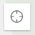
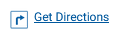
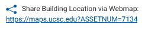

Interactive Map Help
Tips and tricks to get the most out of this map.
Map Layers
- Layers are grouped into related categories. Click the group title to turn on/off all layers in that group.
ex:
- A check-marked box will appear before any visible layers.
- When any layers are turned on, the 'clear layers' icon will appear in the upper right corner. Tap it to turn off all visible layers with a single click.
ex:
Map Tools
The Search Bar
We're working on improving the search bar functionality. Thanks for you patience.
Location
- Tap the crosshairs icon in the upper left hand of the map to drop a pin at your current location
ex: 
- To use Google Maps for directions to a facility, click the pop-up and tap 'Get Directions'. A new tab will open with the selected building as the destination and your current location as the origin.
ex: 
The Pop-Up Window
Building popups contain a few additional features.
- The Asset Number is in the upper left corner of the pop-up title, along with the facility name
- To use Google Maps for directions to a facility, tap 'Get Directions'. A new tab will open with the selected building as the destination and your current location as the origin.
ex:
- Use the url under 'Share Building Location via Webmap' to load the webmap panned and zoomed to a particular building.
ex: 

 Help
Help